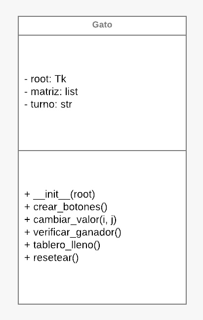

Integrantes del Equipo
Diego Lozano Camargo (230110530)
Bryan Fuentes Perez (230110581)
Prueba de ejecucion
Diagrama de clases UML
Ver Código completo
Implementación

Descripción General
El juego "3 en Raya" es una implementación gráfica de un clásico juego de mesa para dos jugadores. Los jugadores alternan turnos para marcar sus símbolos (X y O) en un tablero de 3x3. El objetivo es alinear tres de sus símbolos en una fila, columna o diagonal. La aplicación está construida utilizando la biblioteca Tkinter de Python, que proporciona herramientas para crear interfaces gráficas de usuario (GUI).
Clases y Métodos
Clase gato
Esta clase representa el juego en sí. Contiene la lógica del juego, la interfaz gráfica y el manejo de eventos.
Método void __init__(self, tk root)
- Descripción: Constructor de la clase. Inicializa la ventana principal del juego y establece el estado inicial del tablero y el turno del jugador.
- Tipo de retorno:
None(similar avoid). - Tipos de datos utilizados:
root:tk.Tk(objeto de la ventana principal).matriz:listdelist(matriz 3x3 que contiene objetosButton).turno:str(indica el símbolo del jugador actual, "X" o "O").
Método void crear_botones(self)
- Descripción: Crea una cuadrícula de botones que representan cada celda del tablero. Cada botón está vinculado a un comando que permite al jugador marcar su símbolo en la celda correspondiente.
- Tipo de retorno:
None(similar avoid). - Tipos de datos utilizados:
i,j:int(índices de fila y columna para la matriz).boton:tk.Button(objeto botón creado para la celda).
Método void cambiar_valor(self, i, j)
- Descripción: Cambia el valor del botón en la posición (i, j) con el símbolo del jugador actual. Verifica si hay un ganador o si el tablero está lleno después de cada movimiento.
- Tipo de retorno:
None(similar avoid). - Tipos de datos utilizados:
i,j:int(índices de fila y columna para la matriz).
Método bool verificar_ganador(self)
- Descripción: Comprueba todas las combinaciones posibles para determinar si el jugador actual ha ganado. Retorna
Truesi hay un ganador yFalseen caso contrario. - Tipo de retorno:
bool. - Tipos de datos utilizados:
combinaciones:listdelist(lista de combinaciones ganadoras).combinacion:tuple(cada combinación a verificar).
Método bool tablero_lleno(self)
- Descripción: Verifica si todas las celdas del tablero están ocupadas. Retorna
Truesi el tablero está lleno yFalsesi hay al menos una celda vacía. - Tipo de retorno:
bool. - Tipos de datos utilizados:
fila:list(cada fila de la matriz).boton:tk.Button(cada botón en la fila).
Método void resetear(self)
- Descripción: Reinicia el juego limpiando todos los botones y restableciendo el turno al jugador inicial.
- Tipo de retorno:
None(similar avoid). - Tipos de datos utilizados:
fila:list(cada fila de la matriz).boton:tk.Button(cada botón en la fila).
Funcionamiento del Juego
- Al iniciar la aplicación, se crea una ventana con un tablero de 3x3, donde cada celda está representada por un botón.
- Los jugadores alternan turnos haciendo clic en las celdas vacías.
- Después de cada movimiento, el juego verifica si un jugador ha ganado o si el juego ha terminado en empate.
- Si hay un ganador o el juego termina en empate, se muestra un mensaje y el tablero se reinicia para jugar de nuevo.
Consideraciones
- La lógica del juego asegura que no se puedan realizar movimientos en celdas ya ocupadas.
- El uso de
messageboxpermite mostrar información relevante al jugador de manera amigable. - El diseño del juego es simple y accesible, lo que lo hace adecuado para jugadores de todas las edades.